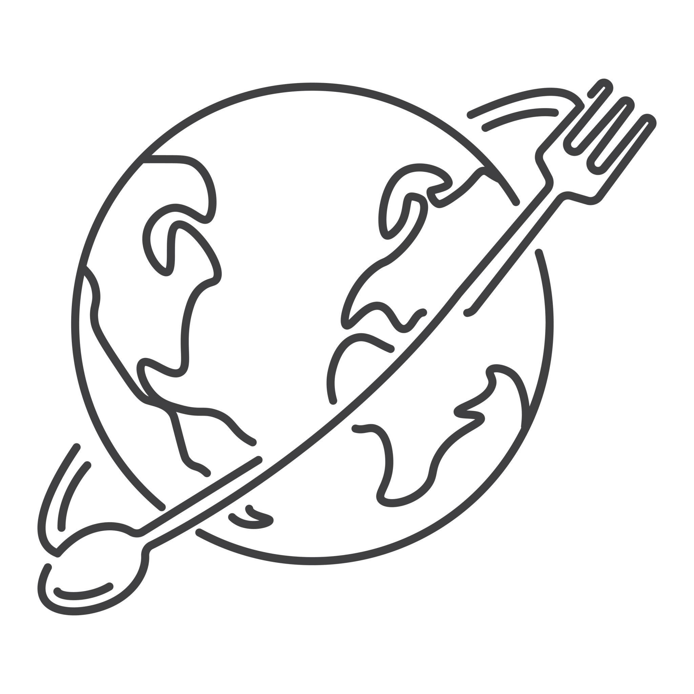

1. Purpose
The purpose of this site is to educate users about world cultures through cuisine, traditions, and language. It provides an engaging and interactive way to explore global diversity using visually rich and structured content.
2. Target Audience
- Students (high school to college)
- Individuals interested in travel and culture
- Casual users browsing engaging content
Users are expected to prefer mobile-friendly design, quick information, and interactive elements.
3. Dynamic Elements
- Dynamic rendering of culture cards using JavaScript
- Filtering system by country or region
- Random culture generator button
- Event listeners for user interaction
- Conditional branching for filtering logic
- Use of arrays, objects, and array methods (
forEach,filter)
4. Logo
The logo will feature a minimalist globe combined with food elements such as a fork or chopsticks, representing global cuisine. The text "Global Table" will appear beneath the icon.

5. Color Scheme
Primary: (Terracotta)
Secondary: (Sand)
Accent: (Olive)
Dark: (Charcoal)
Background: (White)
6. Typography
- Headings: Poppins
- Body: Open Sans
- Fallback: Arial, sans-serif
7. Content Plan
Home Page
- Introduction
- Featured cultures
Cultures Page
- Images of dishes
- Country name
- Description
- Cultural notes
- Language phrases
About Page
- Purpose of the site
- Cultural importance
Contact Page
- Name input
- Message form
8. Wireframes
Home Page
Header → Hero Section → Featured Cards → Footer
Cultures Page
Header → Filter Buttons → Grid of Culture Cards → Footer
About Page
Header → Text Content → Footer
Contact Page
Header → Form → Footer
9. Responsiveness
- Mobile-first design approach
- Grid layout adapts for larger screens
- Flexible images and scalable typography
10. Accessibility
- Semantic HTML structure
- Alt text for images
- High color contrast
- Keyboard-friendly navigation
11. Performance
- Compressed images (WebP)
- Lazy loading images
- Minimal JavaScript
- Optimized CSS